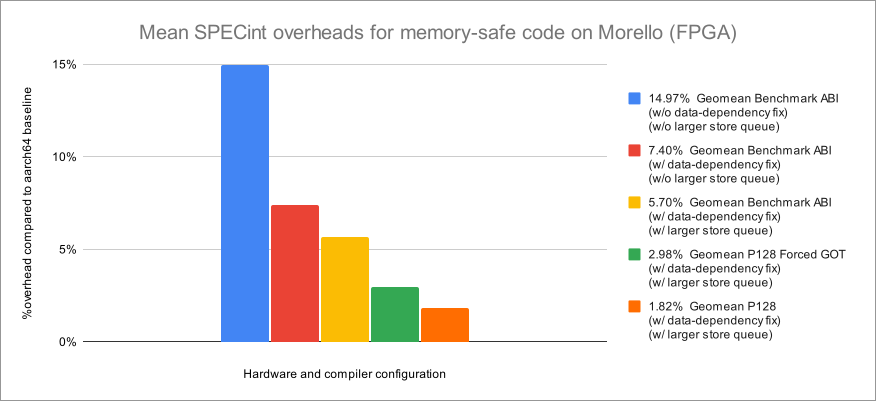

Early performance results from the prototype Morello microarchitecture
- Robert N. M. Watson (University of Cambridge),
- Jessica Clarke (University of Cambridge),
- Peter Sewell (University of Cambridge),
- Jonathan Woodruff (University of Cambridge),
- Simon W. Moore (University of Cambridge),
- Graeme Barnes (Arm Limited),
- Richard Grisenthwaite (Arm Limited),
- Kathryn Stacer (Arm Limited),
- Silviu Baranga (Arm Limited), and
- Alexander Richardson (Google LLC)
This is a living document; feedback and contributions are welcomed. Please see our GitHub Repository for source code and an issue tracker. There is a rendered version on the web, which is automatically updated when the git repository is committed to.
Citation
Please cite this report as:
Robert N. M. Watson, Jessica Clarke, Peter Sewell, Jonathan Woodruff, Simon W. Moore, Graeme Barnes, Richard Grisenthwaite, Kathryn Stacer, Silviu Baranga, and Alexander Richardson. Early performance results from the prototype Morello microarchitecture. Technical Report UCAM-CL-TR-986, University of Cambridge, Computer Laboratory, 30 September 2023.
Or in BibTeX:
@TechReport{UCAM-CL-TR-986,
author = {Watson, Robert N. M. and Clarke, Jessica and Sewell, Peter
and Woodruff, Jonathan and Moore, Simon W. and Barnes,
Graeme and Grisenthwaite, Richard and Stacer, Kathryn and
Baranga, Silviu and Richardson, Alexander},
title = {{Early performance results from the prototype Morello
microarchitecture}},
institution = {University of Cambridge, Computer Laboratory},
address = {15 JJ Thomson Avenue, Cambridge CB3 0FD, United Kingdom,
phone +44 1223 763500},
month = {September},
year = {2023},
number = {UCAM-CL-TR-986}
}
Acknowledgements
This work was supported by Innovate UK project "Digital Security by Design (DSbD) Technology Platform Prototype", 105694. We gratefully acknowledge UK Research and Innovation (UKRI), who sponsored the creation of Morello, and also the significant investment by DARPA in supporting the creation of CHERI and its earlier prototypes. We also acknowledge Arm Limited and Google, Inc.
Introduction
Arm’s Morello1 is a first-generation, CHERI-enabled prototype CPU based on Arm’s Neoverse N1, as found in the N1SDP evaluation board. CHERI2 is an architectural feature that promises to dramatically improve software security through fine-grained memory protection and scalable compartmentalization. Supported by UKRI, Morello is a research platform to evaluate CHERI at an industrial scale through composition with a rich, contemporary, high-performance microarchitecture and full software stack at a scale unobtainable via ISA emulators or hardware simulators.
Because of a 12-month project timeline, we opted to develop Morello as an extension to the existing Neoverse N1 design. This choice allowed us to work with an extremely mature and rich existing production microarchitecture, and complete the work on a short timescale, but had the downside of preventing certain design choices that might have been accessible in a from-scratch design intended to support CHERI. Despite this, Morello has allowed us to gain the first rich understanding of the impact of CHERI on not just hardware, but also complete software ecosystems. It has already enabled experimentation with the protection model in full-system designs ranging from server, desktop, and mobile software to automotive, aerospace, and industrial control systems.
Morello development has continued following tapeout, allowing us to take performance results and analysis from the shipped hardware platform and explore microarchitectural variations not available on the original project timeline. This report therefore presents not just early experimental results for the Morello microarchitecture as shipped, but also results from multiple Morello processor variations that benefit from experience gained from 12 months of real-world use of over 100 million lines of code (MLoC) of CHERI-enabled software. All results are taken from FPGA implementations based on the same RTL implementing shipped hardware. The report also provides guidance on performance analysis for others working on the platform.
This report is a versioned living document, which will be updated (with change notes) as our on-going work with Morello proceeds. If you are performing performance experiments on the Morello platform and would like to reach out to us for discussion of experimental design, or guidance on interpreting results, please do not hesitate to contact us.
This work was supported by Innovate UK project "Digital Security by Design (DSbD) Technology Platform Prototype", 105694. We gratefully acknowledge UK Research and Innovation (UKRI), who sponsored the creation of Morello, and also the significant investment by DARPA in supporting the creation of CHERI and its earlier prototypes. We also acknowledge Arm Limited and Google, Inc.
Grisenthwaite, et al. The Arm Morello Evaluation Platform—Validating CHERI-Based Security in a High-Performance System, IEEE Micro Magazine Vol 42.3, 2023.
Watson, et al. An Introduction to CHERI.
Headline results
In this section, we summarise high-level Morello programme results with respect to architectural integration, software ecosystem enablement, microarchitectural objectives, and dynamic performance.
More detailed explorations of the performance framework and performance analysis results can be found in later sections Performance methodology and Performance analysis of SPECint 2006).
Architectural integration
A key aim for the Morello Programme was to establish an integration of the CHERI protection model with the baseline Armv8.2-A architecture that was sympathetic to the instruction-set philosophy and its goals. This aim was met through a set of adaptations to the CHERI approach including a deemphasis of architectural exceptions during register-to-register operations, the introduction of a “capability mode” that enables capability addressing for existing load and store instructions to conserve opcode space, and integrating CHERI with other contemporary architectural features such as hypervisor extensions that had not been present in earlier MIPS-based CHERI prototypes.
These architectural extensions are described in detail in Arm’s Morello architecture specification1, with SRI International and the University of Cambridge’s CHERI ISAv82 providing more detailed rationale for aspects of the design and its implications for microarchitecture. Machine-checked formal proof ensures that the CHERI-extended Morello ISA specification preserves key security properties for any possible code sequence3. Results to date give us strong confidence that CHERI support can be tightly and cleanly integrated into future Arm architectures.
Watson, et al. Capability Hardware Enhanced RISC Instructions: CHERI Instruction-Set Architecture (Version 8).
Bauereiss et al., Verified Security for the Morello Capability-enhanced Prototype Arm Architecture, ESOP 2022
Software ecosystem enablement
The primary aim of the Morello Programme has been to enable creation of, and experimentation with, a large CHERI-enabled software ecosystem. Prior to Morello, research implementations of CHERI were entirely on FPGA (clocking around 100MHz), or were emulated with QEMU. While valuable in early research, these platforms could not enable "at scale" exploration of the impact of CHERI on large software corpora such as full operating systems, major desktop applications, or full server software stacks. In contrast, Morello operates at 2.5GHz, has a quad-core superscalar design, includes an on-chip GPU, supports up to 64GiB of DRAM, and provides high-performance I/O via PCIe.
Over the past year, Morello has supported a vast increase in the size of the CHERI software ecosystem, driven by over 70 companies, universities, and governmental organizations, which have collectively adapted over 100MLoC of open-source software to CHERI memory safety, according to current estimates. This includes memory-safe FreeBSD kernel and userlevel, Linux BusyBox, Wayland window server and KDE Plasma desktop, and approaching ten thousand open-source software packages. At the time of writing, there is a significant in-progress effort to adapt the Chromium web browser and V8 JavaScript runtime to compile with memory-safe CHERI C/C++ languages. In addition to announced programme partners such as Google and Microsoft, dozens of companies supported by UKRI’s Technology Access Programme (TAP) have also adapted millions of lines of open-source and proprietary code to the platform.
This enablement has allowed realistic experimentation with server, workstation, industrial control, and automotive workloads running under memory safety, and also early work on fine-grained software compartmentalisation as research prototypes mature.
Microarchitectural objectives
A further central experimental goal of the Morello Programme has been to establish the viability of CHERI-enabled microarchitecture when composed with contemporary high-performance processor design. The Morello SOC has 4 processor cores based on the Neoverse N1 processor, a Mali G76 GPU, and a modified memory controller. The modified N1 cores maintain the features in the Armv8.2 Neoverse N1 while adding the 129-bit CHERI capability protection model. Morello is backwards compatible with Armv8-A architecture systems in AArch64 (AArch32 support was disabled for simplicity).
The resulting design, despite being a first-generation prototype developed on an accelerated timescale, achieved both frequency and microarchitectural objectives, clocking at 2.5GHz and having a <6% area overhead in the core clusters (CPU, L1, L2, and L3) as compared to the baseline Armv8.2-A-only design (AArch32 support enabled). Important microarchitectural concerns included the potential effects of capability compression, bounds checking, and DDC/PCC control of memory accesses on the critical path for the cores themselves. All timing objectives for these paths were achieved.
Dynamic performance
A rich understanding of the dynamic performance effects of CHERI was also an important aim of the work, but unlike the former goals, this goal was necessarily constrained by the limited one-year development timeline imposed by Digital Security by Design programme, driven by the need to carry Morello use into a broad range of industrial, government, and academic labs. Hence it is necessary to make the distinction between the industrial prototype built to gain understanding of new architecture versus what one would expect from a future first or second generation commercial product optimized for power and performance.
The dynamic performance aims for Morello were to create a hardware design able to enable the evaluation of the usage of capabilities within rich established software ecosystems and to demonstrate their practical viability and security benefit. A secondary aim was to enable the creation of software workloads suitable to drive future hardware optimisation, and to allow realistic projections of future performance — while not necessarily achieving optimal results in the current generation. The design-time constraints were:
-
Limited existing CHERI-enabled workloads against which to tune the implementation during initial development;
-
Limitations on changes to microarchitecture from the baseline N1SDP achievable in 12 months; and
-
Classical Armv8.2-A elements of the microarchitecture have seen significantly more optimization than added CHERI extensions, meaning that care is required when performing side-by-side comparisons.
These limitations mean that run-time performance measurements observed on Morello should not be regarded as a good predictor of expected CHERI performance overheads when creating a production-quality, later-generation microarchitecture, at least without further analysis in the style of this report.
Microarchitectural research and development has, however, continued following tapeout. Essential to our analysis has been the creation of post-tapeout Morello variations implemented on FPGA, based on the same RTL used in the shipped chip, allowing both more detailed performance analysis and also optimization of key parameters and behaviors driven by profiling data that we have already been able to collect on the shipped chip. This lets us use Morello-derived measurements to estimate performance of more optimized potential future implementations.
Please see later sections Performance methodology and Performance analysis of SPECint 2006 for significant greater detail on our approach and results presented in the remainder of this section.
Essential overheads
A key question in the CHERI research since inception has been what the essential performance overheads are — i.e., those that are innate to the CHERI protection model — as opposed to the design choices of a specific prototype or commercial implementation.
Morello has allowed us to answer this question with reasonable confidence: the widening of pointers in capability-centric code generation models is the key overhead, rather than other architectural impacts (for example) substantially harming code density or limiting instruction concurrency. Other than the register file, Morello structures (e.g., buses) were generally not widened, yet generally performed well without substantial re-tuning. One known exception to this was in branch prediction, where the lack of prediction of the bounds of PC has performance impact on some workloads, which can be addressed in a future mature implementation. As described later in this report, a Benchmark ABI allows us to utilize more mature integer-address (non-CHERI) branch prediction to explore how a better optimized implementation would enable greater performance, while retaining CHERI’s essential pointer-size overheads. We continue to explore other potential overheads arising from opportunities to better tune the Morello architecture to CHERI’s requirements, including the sizing of store queues.
Morello has also allowed us to develop new performance methodology clearly differentiating effects arising from design choices of this specific implementation from those essential costs, although limitations on software maturity (e.g., unoptimized ABI and compiler toolchain — for example, being unable to optimize certain global accesses that could occur directly via PCC rather than via the GOT) also limit accuracy on our projections. These are explored in greater detail in the remainder of this report.
Initial measured performance results on Morello and ABI variations
In this section, we present high-level performance results running SPECint 2006, an industry-standard benchmark suite, on both unmodified and modified Morello microarchitectures, comparing several code-generation models allowing us to analyze the performance of memory-safe CHERI pure-capability code. All measurements were made on a consistently configured FPGA platform that offers strong performance fidelity, and used the 'train' rather than 'ref' workload due to on-FPGA execution times. All Morello configurations operated at a fixed frequency during benchmarks1, with execution time measured in clock cycles for the purposes of calculating overheads. More detailed hardware, toolchain, and software compilation and configuration information, further results from additional configurations, and limitations of this work (including the specific SPECint subset used, compilation choices, implications of using the ‘train’ workload, and why), may be found in Section 3.

Result on unmodified Morello microarchitecture on FPGA
Using an unmodified FPGA implementation of Morello (i.e., based on RTL used for first-generation Morello hardware), and employing software adaptations in the Benchmark ABI that compensate for Morello limitations such as those relating to capability-enabled branch prediction, we were able to achieve a 14.97% geometric mean overhead across the training workload of the SPECint 2006 benchmark suite with "pure capability" (memory-safe) code generation.
Result on improved Morello microarchitecture on FPGA
Using a modified FPGA implementation of Morello developed after chip tapeout, to work around a costly microarchitectural data-dependent exception check, which had been highlighted by performance counter results from dynamic workloads, we were able to achieve a 7.40% geometric mean overhead for the training workload of SPECint 2006 with "pure capability" code generation, with the Benchmark ABI, on an incrementally modified Morello design. Analysis of the exception delivery issue suggests that more recent (post-Neoverse N1) microarchitectures already contain the changed behavior required to enable this optimization such that this roughly 51% of the overhead seen on the original Morello design (i.e., without the data-dependency fix) could be decreased or eliminated.
Modeled result using P128 on improved Morello microarchitecture on FPGA
To model future microarchitectural improvements, we utilized modified aarch64 (P128) code generation emulating capability memory overheads by widening pointer memory footprint — the essential cost to the CHERI extensions — while using the baseline A64 architecture, still executing on the Morello microarchitecture. Using this modified compiler and a Morello FPGA implementation with the above microarchitectural improvement, we were able to achieve an estimate of between 2.2% and 3.4% geometric mean overhead for the training workload of SPECint 2006 for "pure capability" code generation on a modified Morello design. This figure is intended to reflect and compensate for microarchitectural effects arising from a lack of optimization in the Morello implementation, such as store-queue limits, instruction scheduling limitations, and other related factors, which we continue to investigate using modified Morello designs.
Conclusion from initial measurements
The above 2.2% to 3.4% is our current best estimate of the geometric mean overhead that would be incurred for a future optimized design (though further improvements beyond that may well be possible).
The FPGA setup used in these measurements does not implement thermal throttling.
Next steps
At the time of writing, we are continuing several projects to better understand and optimize Morello performance to converge, as much as possible, with essential CHERI performance:
- Further tuning the Morello microarchitecture on FPGA, including tuning store queues that were tuned for the pre-CHERI N1SDP design. This problem has been highlighted in memory-store-intensive benchmarks that see greater congestion with rapid sequential capability-width stores. This issue in particular is believed to reduce the throughput of load- and store-pair capability instructions frequently used in stack push and pop operations.
- Continuing to improve code generation around specific architectural gaps or inconsistencies relative to the baseline aarch64 — for example, around the use of the MADD instruction, for which improved code generation substantially affects the performance of the SPECint 2006 gobmk benchmark.
- Continuing to improve application binary interface (ABI) definitions to enable improved code generation, especially around global variable access.
- Enabling further compiler optimization passes as performance and protection tradeoffs are better understood, and longer-term engineering efforts come to fruition (e.g., around efficient access to global variables, which are always indirected via the GOT in pure-capability code, but some of which can be accessed safely via PCC).
- Improving our models of optimized P128 code generation to better mirror tradeoffs in CHERI-enabled calling conventions and data layouts, allowing us to refine our estimated future microarchitecture results.
- Taking advantage of now rich workloads and better optimized toolchain to continue to explore the impacts of ISA design choices and their impacts on ABIs and code generation, and their effects on performance.
The data extracted from these understandings point to further possible enhancements to a Capability Extension to the Arm architecture (and other ISAs) that could be deployed commercially.
In the remainder of this report, we explore the performance methodology employed in this work in greater detail, both to explain our results and also enable others to apply it. Further details on the next steps above may be found at the end of the report in the Future Directions section.
Performance methodology
In the following section, we explore the following as understood at the time of writing:
- Meaningful software comparisons (e.g., 64-bit aarch64 vs pure-capability aarch64c, OSes, etc)
- Known limitations of the Morello processor design and SoC, as well as the data-dependency fix used in our measurements
- Known limitations of the Morello software stack including ABIs and toolchain
Baseline and comparison framework
Hardware
Despite being based on the Neoverse N1 configured as found in the N1SDP, performance results gathered on Morello are not directly comparable. Most importantly, cache sizes and other aspects of the memory subsystem differ between the designs. Instead, direct comparisons must be performed between multiple software configurations on Morello.
In addition, measurements in this report are made on an FPGA-adapted implementation of Morello, with two variants used:
- Baseline Morello design modeled on the shipped Morello SoC.
- Modified Morello design with data-dependent exception fix correcting a microarchitectural issue with exception delivery (see below for details).
In general, third parties will only have access to unmodified Morello SoCs. However, they should see similar results to those we describe for the baseline Morello design on FPGA.
All Morello configurations operated at a fixed frequency during benchmarks1, with execution time measured in clock cycles for the purposes of calculating overheads.
Software
In general, comparisons in this report seek to contrast the dynamic behavior of memory-unsafe code with memory-safe code on Morello. To understand the essential pointer-size costs of CHERI, we also introduce a fourth form of code, P128, with two variations. This will allow us to model ‘optimal’ performance with the current microarchitecture. Our experiments set up comparisons between five forms of code:
- Hybrid (aarch64) code, which employs capabilities only where explicitly annotated in C and C++.
- Purecap ABI (aarch64c) code, which employs capabilities ubiquitously in the implementation of CHERI C and C++, including both sub-language pointers (e.g., stack pointers, GOT pointers, and return addresses) and language-level pointers (e.g., pointer variables pointing at heap allocations, stack allocations, or functions).
- Benchmark ABI (aarch64c) code, which has modified code generation to work around a lack of capability-awareness in the shipped Morello branch predictor (described below). This code retains an identical memory footprint and near-identical code generation to pure-capability aarch64c C/C++ code, but has reduced protection behavior. See below for more information on this ABI.
- P128 code, which is a modified form of aarch64 code in which pointer footprints are widened to 128 bits from 64 bits, while still implemented as 64-bit integers rather than capabilities. See below for more information on this compilation mode.
- P128 Forced-GOT code, which, unlike P128, which allows access to global variables via PC-derived pointers, forces the indirection of all global access via a Global Offset Table (GOT) to emulate the potential worst-case addition of capability indirection that could be experienced with pure-capability code. See below for more information on this compilation mode.
We recommend that code be compiled with optimization for performance enabled, which we believe currently achieves the best comparison; it is especially important that code compiled with -O0 not be compared between ABIs, due to current inefficiency in unoptimized CHERI code generation, eliminated with even basic optimization. With respect to -O1 and above, we are still coming to understand how some optimization passes should interact with capabilities (e.g., SROA, global merging, GVN, and others), and some optimisations are therefore presently inhibited.
One implication of using the hybrid ABI rather than baseline aarch64 is that library implementations of memory-copying routines that have been updated for capability tag propagation, such as memcpy(), will be capability-aware and use capability-based portions of the instruction set. This maximizes comparability in an area where there has not yet been substantial dynamic performance analysis and optimization, but with the limitation that hybrid code might be able to achieve better performance if it used highly optimized copying routines not yet available for CHERI-generated code. Another consideration is that the baseline Armv8.2-a architecture underlying Morello predates dedicated memory-copy instructions2. If these new instructions were suitably adapted to handle CHERI alignment, tag propagation, and bounds enforcement, they would enable comparable hardware-based optimization for capability-enabled memory copying.
For the purposes of these measurements, which focus on userlevel performance, we have used the CheriBSD 22.12 hybrid kernel. Debugging features such as kernel invariants checking (INVARIANTS) and dynamic kernel lock order verification (WITNESS) are left enabled, and should not contribute significantly for these workloads. Userlevel malloc debugging is disabled. CheriBSD is compiled with -O2, including its system libraries.
The SPECint benchmark suite is compiled with -O3. SPEC is statically linked in all presented results.
By default, CheriBSD 22.12 ships with unoptimized third-party libraries (compiled with -O0), to improve debugging in the initial release, and those would not be suitable for benchmarking; we intend to provide packages built with optimizations enabled in the future. SPECint does not have external software dependencies beyond the system library, and so our work is not affected. If we were dependent on third-party packages, as might be true of other benchmark suites, we would need to investigate optimization settings for those packages.
The FPGA setup used in these measurements does not implement thermal throttling.
Weidmann, Arm A-Profile Architecture Developments 2021.
Morello microarchitectural limitations
The following microarchitecture limitations arose due to the constrained timeline of the Morello development process. All are believed resolvable with a full-length design and optimization cycle used with production hardware.
- PCC branch-prediction This issue prevents proper speculation around changes in PC bounds — due to limitations in changes that could be made relative to the baseline design in this research programme. As a result, additional stalls are incurred when performing inter-library pure-capability function calls or returns when the results of any updated bounds on PCC are depended on. This occurs, for example, when PC-relative accesses to globals, or function calls or returns, depend on the value of PCC. This can be worked around via the "Benchmark ABI", which avoids capability-based jumps and hence additional stalls; see below for details of this ABI.
- Data-dependent exception support during capability stores introduces a stall in address translation. This exception is motivated by MMU support for capability tracking, used for heap temporal memory safety in CHERI. The underlying Armv8.2 architecture targeted by the initial Neoverse N1 has no concept of data-dependent exceptions on stores, and that micro-architecture does not have a structure that supports data-dependent exceptions for stores in an efficient way. Arm's Memory Tagging Extensions (MTE) have a similar requirement and so more recent Arm microarchitectures are much more optimized in this regard.
- Untuned store throughput and buffer sizes due to memory buses not having been widened. Whereas store-pair instructions from 64-bit Armv8-A can execute in one cycle and occupy a single store-buffer entry, store-pair instructions for 128-bit capabilities execute in two cycles and occupy two store-buffer entries. Store throughput and the store buffer were sized based on aarch64 code measurements, and can become congested when storing capability pairs as a result of retaining that size in Morello.
- The MADD instruction, which performs a multiply-and-add, is used both for matrix operations and to calculate array and data-structure offsets. In Morello, a version operating on capabilities is omitted, leading to code-generation inefficiency when performing some types of memory accesses (seen particularly in the SPECint gobmk benchmark).
More generally, when comparing performance, consideration should be made for the differing levels of optimisation between baseline 64-bit Armv8-A instructions in the Neoverse N1, and instructions added as part of the Morello architecture. As a result, there may be further microarchitectural optimizations that do not properly apply when using CHERI-enabled code. For example, we have not yet reviewed the full set of memory prefetchers to make sure they behave well with pure-capability code. We have ongoing investigations in a number of these areas (see below for examples).
ABIs, code generation, and compilation
We now describe, in greater detail, the different compilation and code-generation targets used in our measurements beyond the standard hybrid aarch64 and pure-capability aarch64c targets.
Benchmark ABI
As described above, the Morello branch-predictor was not expanded to predict bounds. As a result, a capability jump register will stall later PCC-dependent instructions until bounds are established. This is particularly problematic across dynamically linked calls (and returns) between libraries, which will change bounds to those covering the called (or returned-to) library. However, this effect is not limited to dynamic linking, as it also affects jump-register instructions returning from statically linked code, as well as C++ code that makes use of virtual methods. These effects are masked for longer functions, and in particular those that do not use the GOT early in their implementation, but this effect can be a substantial tax on dynamic performance when capability protections are applied to control flow.
To work around this behavior, we have developed a Benchmark ABI, which uses global bounds for the program counter capability (PCC) and any return capabilities throughout execution. All other in-memory and in-register code capability values retain narrowed bounds (e.g., those set up by the run-time linker), but code generation uses integer rather than capability jumps, retaining global bounds in PCC regardless of control flow. In effect, this ABI substantially reduces control-flow protections and encapsulation in return for more effective branch-prediction on the Morello microarchitecture, which is likely to be representative of more mature future microarchitectures. To the greatest extent possible, we do not modify any other aspects of code generation, and no in-memory data structures are changed — in particular, function pointers, PLT GOT entries, and return addresses all remain capability width, and are loaded, stored, and passed around as such, despite being used as integers in branch instructions, retaining the in-memory footprint essential to analyzing pure-capability performance overheads.
Using the Benchmark ABI requires a mildly patched kernel and recompilation of code to use the new branching behavior. To support dynamically linked code, the Benchmark ABI will also require minor changes to the run-time linker. While the current patches are an experimental prototype, we are exploring exporting this feature for third-party use in performance measurement. It is important to note that the Benchmark ABI should not be used for security analysis and experimentation, as its protections are intentionally reduced to facilitate performance analysis and modeling.
A commercially deployed microarchitecture supporting CHERI architectural extensions would introduce micro-architectural enhancements to address the performance limitations; therefore the Benchmark ABI is a temporary measure to facilitate comparisons using the Morello prototype.
P128 and P128 Forced-GOT compilation
The intention of these code-generation modes is to enable performance
measurements for the essential overheads of pure-capability code, under the
assumption that pointer-size growth is the primary essential overhead to
CHERI.
In this C/C++ variant and code-generation mode, pointers and [u]intptr_t are
widened to 128 bits, the same size as a capability, but only the integer
portion is used by generated code.
This allows P128 code to exercise the more mature aarch64 microarchitecture
while tracking essential memory-growth overhead.
P128 code adopts the default aarch64 policy allowing access to global variables via PC-derived pointers, a strictly more liberal policy than used in the pure-capability compilation model, which may require access via the GOT in order to provide bounds for the global variable. P128 Forced GOT instead forces all global-variable accesses to be indirected via the Global Offset Table (GOT), a strictly more conservative policy that the pure-capability compilation model, as pure-capability code may (in the future) avoid use of the GOT where pointers will not be taken to globals.
Even more so than the Benchmark ABI, it is important not to use this compilation mode for security analysis and experimentation, since it makes no additional use of CHERI capabilities compared with hybrid aarch64 code. And, similarly, support for P128 currently consists of patches not intended to be supported outside of the Cambridge/Arm research environment; we are working to improve the quality of this implementation to make it suitable for third-party use.
Performance analysis of SPECint 2006
In this work, we analyze the behavior of the SPECint benchmarks that compile and run without modification for the CheriBSD pure-capability CheriABI process environment. All benchmarks are executed on an FPGA-based Morello implementation using identical core counts, cache configurations, and microarchitecturally identical to that in Morello except as otherwise noted.
SPECint 2006 benchmark suite
SPECint 2006 is an industry-standard benchmark suite consisting of a series of individual benchmarks representing integer-centric workloads such as code compilation, data compression, protein sequence analysis, and XML processing. Most SPECint benchmarks compile with CHERI memory safety, and run on Morello, without modification. The benchmark suite supports various data sets (test, training, and reference), and we make use of the training configuration due to implementing Morello on FPGA, which due to a roughly 10MHz clock takes approximately a week to complete. Due to reproducibility requirements on published SPECint results, we omit SPECint results requiring source-code modifications from this study. Results from the following benchmarks are included:
| Benchmark | Description | Status |
|---|---|---|
| 401.bzip2 | Data compression | Compiled as CHERI C/C++ |
| 445.gobmk | Game of Go with AI participants | Compiled as CHERI C/C++ |
| 456.hmmer | Protein sequence analysis | Compiled as CHERI C/C++ |
| 464.h264ref | Video compression | Compiled as CHERI C/C++ |
| 471.omnetpp | Discrete event simulation | Compiled as CHERI C/C++ |
| 473.astar | Path-finding algorithms | Compiled as CHERI C/C++ |
| 483.xalancbmk | XML document translation | Compiled as CHERI C/C++ |
The following benchmarks were not used either due to complex but incomplete adaptations to CHERI C/C++ preventing them from running (e.g., due to having only adapted more recent versions of gcc and perl), due to requiring unofficial patches that prevent us from distributing results, or due to known but as-yet unresolved compiler issues affecting comparability:
| Benchmark | Description | Status |
|---|---|---|
| 400.perlbench | Various Perl language workloads | Old version of perl not adapted to CHERI C/C++ |
| 403.gcc | C compiler workload | Old version of gcc not adapted to CHERI C/C++ |
| 429.mcf | Vehicle scheduling | CHERI C/C++ adaptations fixing undefined behavior relating to realloc() are unofficial, and further changes to mitigate additional CHERI-induced padding due to pointer alignment mean that results are less comparable to stock SPECint 2006. |
| 462.libquantum | Quantum computer simulation | P128 benchmark runs 30% faster than the aarch64 version since 128-bit integer pointers inhibit vectorization in a case where vectorization turns out to be harmful on the N1SDP microarchitecture. |
All benchmark binaries are compiled at -O3, and are statically linked.
Specific hardware and software configurations
The following software and hardware configurations were used in these benchmarks. Specific hardware configurations employ a microarchitectural change eliminating a data-dependent exception issue as noted above.
Hybrid (aarch64) baseline ABI
This configuration is the baseline for overhead calculations where no microarchitectural changes are used. It reflects the performance of legacy aarch64 (64-bit) code on Morello without fixes to the data-dependent exception issue.
Purecap ABI (w/o data-dependency fix)
This configuration presents worst-case performance for the shipping Morello design, as it contains no improvements to the microarchitecture relative to the taped-out implementation, and also no software adaptations for limitations to the microarchitectural implementation. In this mode, capabilities are used for all pointers, implied (e.g., program counter, stack pointer, GOT entries, etc.) and explicit (e.g., language-level pointers to structures and arrays). Further, all global accesses are via the GOT, to ensure every global is accessed through a dedicated capability carrying variable-specific permissions and bounds. This configuration is known to trigger the PCC branch-prediction issue during calls into short functions, function returns, and jump tables — a change that is now also used in baseline pure-capability code generation.
Benchmark ABI (w/o data-dependency fix)
This configuration is based on the purecap configuration, but with a shift to the "Benchmark ABI", which modifies default bounds on code pointers to be global. The benchmark ABI shifts code generation to use integer jump instructions, avoiding triggering of stalls stemming from PCC-relative accesses depending on new PCC bounds as described in Morello microarchitectural limitations. This workaround should especially recover non-essential overhead associated with jump tables and calls into short functions.
Benchmark ABI (w/ data-dependency fix)
This configuration is based on the Benchmark ABI configuration, only run with a modified microarchitecture that addresses the data-dependent exception issue described in Morello microarchitectural limitations. The data-dependency fix avoids undesirable (and likely unnecessary in more recent baseline microarchitectures) stalls on capability stores.
P128 Forced GOT (w/ data-dependency fix)
This configuration is based on the P128 compilation mode, which widens language-level pointers to capability width (128 bits) to emulate the essential overhead of pointer-size growth without exercising capability portions of the microarchitecture, which are less mature than 64-bit portions. This compilation mode is known not to experience problems with MADD code generation, for example. It also does not encounter problems with PCC branch prediction. In this mode, all global accesses other than constant pools are via a GOT, and PC-relative access to globals is not used, forcing indirection that corresponds to purecap global access.
We treat this configuration as the upper bound for estimated performance overhead of an optimized CHERI implementation against the Morello baseline (Neoverse N1) microarchitecture with elimination of the data-dependent exception issue; the microarchitectural change should not, however, affect this workload. There are important limitations to the current fidelity of this work. With respect to the stack, storage for language-level pointers is widened, but only 64-bit values are loaded and stored. For implied register saves and restores, storage is not widened. GOT entries, including those used for the PLT, remain 64 bit.
P128 (w/ data-dependency fix)
This configuration is identical to the P128 Forced-GOT configuration except that access to globals is sometimes performed via PCC, bypas ing GOT entries in configurations where aarch64 would offer the same choice — e.g., when performing read-only accesses to globals within the current shared object. If this optimization were used with pure-capability code, it could lead to inadequate bounds enforcement for read-only global variables whose pointers are taken, or when the compiler cannot prove that dynamically chosen indices to global arrays remain in bounds. We treat this configuration as the lower bound for estimated performance overhead of an optimized CHERI implementation against the Morello baseline (Neoverse N1) microarchitecture with elimination of the data-dependent exception issue; as above, the microarchitectural change should not affect this workload.
Initial results
Using the baseline pure-capability code generation combined with an unmodified microarchitecture yields 28.01% geometric mean overhead for the training workload of SPECint 2006.
Working around dependence on unpredicted PCC bounds when performing a capability jump register using the Benchmark ABI combined with an unmodified microarchitecture, this is reduced to 14.97% geometric mean overhead (a 46.6% reduction).
Applying a microarchitectural fix to the data-dependent exception issue, and measuring using the Benchmark ABI yields a 7.40% geometric mean overhead (a further 50.1% overhead reduction).
Using the P128 Forced GOT and P128 compilation modes gives an upper bound estimated overhead of 3.4% and lower bound estimated overhead of 2.2%.
Performance-counter data gathered during these experiments suggests that further non-essential architectural and microarchitectural overheads exist, including inefficient code generation around the MADD instruction and also congested store queues due to a lack of queue-size tuning. We have implemented but not yet measured prototype adaptations of the toolchain and microarchitecture to address these issues.
Assuming that the data-dependent exception issue is resolvable in at least one of software and hardware, it is reasonable to project that the goal of 2%-3% overhead for deterministic spatial and referential memory safety is achievable with an optimized instruction-set architecture on a performance-optimized microarchitecture.
Caveats
We have presented early evaluation of the performance properties of the taped out Morello prototype and modified Morello designs running on FPGA. As a first-generation microarchitecture implementing CHERI support developed against the existing Neoverse N1 microarchitecture, direct analysis of the performance to predict future CHERI performance is challenging. Immaturity of the ABIs and compiler toolchain also limits direct prediction of performance for future mature microarchitectures. Our analysis is aimed at identifying, characterizing, and addressing those limitations incrementally through improvements to both Morello hardware and its software stack.
Some care is required in comparing results across both modified hardware and modified ABIs. This FPGA implementation has generally strong performance fidelity, in that it is built from the same RTL used in the shipped process, and offers cycle-accurate implementation within core clusters and across the L1 and L2 caches. It also models DRAM performance proportionately scaled to the FPGA design. However, there are some areas with important differences from the fabricated SoC — for example, relative timings of components (e.g., core clusters vs system busses) is modestly different to accommodate a design spanning multiple FPGAs. Our experience in day-to-day use of Morello on both FPGA and fabricated ASIC is that SPECint performance is extremely consistent due to identical memory subsystem configurations. The FPGA platform also provides a reasonable estimate of the effects of microarchitecture modifications relative to the FPGA baseline without the change — for example, relating to data-dependent exception modifications we have described. With respect to the “Benchmark ABI” and P128 implementation, these are early software prototypes that have seen only limited use, and for which we continue to improve fidelity as the work proceeds.
The SPECint benchmark is an important industry-accepted tool for measuring performance, which we have configured in the "train" rather than "ref" configuration for FPGA performance reasons. However, it reflects a quite narrow workload — and one with a significantly reduced memory footprint; when running "ref" on the actual SoC, we see reduced overheads from CHERI due to the essential memory overheads becoming more prominent. We will seek to widen the set of benchmarks we use, as work proceeds, with particular interest in application-layer benchmarks such as those targeting JavaScript runtimes.
Future work
Our effort to analyze and optimize performance, starting with the original taped-out Morello design, and now continuing on FPGA, remains at an early stage, with many next steps to take. These include:
-
Enabling third-party use of the “Benchmark ABI” to allow reproduction of our results, as well as application of the approach to other workloads. This is an important step, as limitations on speculation for short function executions can have a disproportionate impact on certain workloads, and is also very sensitive to compiler and linker choices regarding code layout and inlining. Toolchain support for the Benchmark ABI will be made available in September 2023. We anticipate that the next release of CheriBSD, targeted for mid-2023, will support statically and dynamically linked binaries, as well as roughly 10K open-source packages, compiled to the Benchmark ABI to support third-party performance analysis on Morello.
-
Improving the completeness of the P128 compilation mode and ABI, which will allow us to better project future performance not just on the Morello design, but also other non-CHERI-enabled microarchitectures (and architectures). Specific goals here would include widening GOT entries and improving layout decisions around spilled stack entries of unknown type (e.g., callee-save registers). It will also be important to compare the sets of optimizations being applied to baseline aarch64 (legacy), P128, and aarch64c (pure-capability) code in order to better understand potential performance comparisons. We have not yet reached a decision on supporting third-party users of the P128 compilation mode on CheriBSD due to the complexity of supporting the ABI.
-
Improving our understanding of security-performance tradeoffs and optimization opportunities around the pure-capability ABIs and code generation. For example, currently all access to global variables from pure-capability code is indirected through the GOT, whereas aarch64 is able to perform some accesses via the program counter. Indirecting via the GOT allows globals to be accessed via dedicated capabilities, each with their own permissions and bounds, but comes at the cost of indirection. However, many of those accesses don’t involve direct use of pointers driven by programmer code — this typically occurs only when a pointer is taken to a global, or arbitrary array accesses occur. It may be possible to safely restore use of read-only PC-relative access in many cases, avoiding this indirection.
-
Continuing improvements to the enhanced on-FPGA Morello implementation. In the next stage of our work, we will be investigating (and retuning) microarchitectural data structures that were left unchanged from the Neoverse N1 design. Of particular interest are store queue sizes, which track in-flight stores, and which are seeing higher congestion as a result of larger capability store-pair memory accesses.
-
Develop and publicize a model based on performance counters for estimating performance overhead contributions from various essential and non-essential factors on Morello. This may make it easier to estimate potential performance behavior for future microarchitectures using measurements taken on the current microarchitecture.
As this work proceeds, we will continue to update this living document.